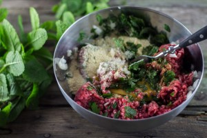
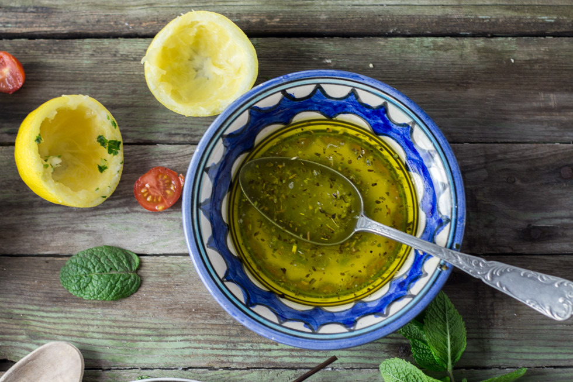
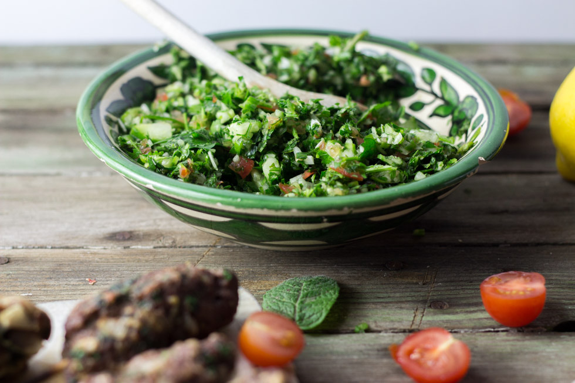

Brochettes de kefta et taboulé libanais

Pour la recette des brochettes de kefta délicieusement parfumées servies avec un bon petit taboulé façon taboulé libanais, c’est par ici!
Pour ceux qui ne connaissent pas, les brochettes de kefta voici quelques explications.. Le kefta est une boulette de viande hachée (plus souvent d’agneau mais aussi de bœufs) agréablement parfumée de pleins d’épices. Certains préparent le kefta sans liants (sans œufs donc) et sachez que c’est tout a fait possible si l’on compacte bien la viande. Personnellement dans cette recette j’ai préféré en mettre mais vous pouvez ne pas me suivre sur ce coup-là!
J’ai accompagné ces brochettes de kefta d’un taboulé façon taboulé libanais. Le taboulé est comme celui que je mange dans notre restaurant libanais préféré c’est à dire qu’il n’y a (presque) que du persil et une délicieuse vinaigrette à l’huile d’olive et au citron pour le parfumer. En écrivant cette recette je me dis que ce soir là fut l’un des meilleurs soirs de la semaine car j’adore quand on se prépare ce type de repas (et mon chéri n’en parlons pas). Pour que le repas soit parfait il faudra penser à préparer un houmous en entrée, ces brochettes de kefta en plat et terminer par un muhallabieh ou encore un knafeh pour le dessert. Évidemment, il faudra accompagner le dessert d’un délicieux thé à la menthe bien chaud et bien sucré pour terminer ce moment en beauté(bon je pense que l’on va vite retourner dans ce restau!!!)! Assez rêvé, je vous laisse maintenant découvrir la recette de mes brochettes de keftas et j’espère qu’elle vous plaira! 🙂
Enregistrer
Ingrédients
- Boeuf haché - 500g
- Oignon nouveau - 1 ou 2 petits
- Persil - 1/2 botte
- Oeuf - 1
- Chapelure - 80g
- Menthe - 1 poignée
- Cumin - 2 càc
- Quatre épices - 1 càc
- Sel, poivre
- Huile d'olive - 6 càs
- Jus de citron - 3 càs
- Thym, origan ou herbes de Provence - 1 càc
- Botte de persil - 1 grosse botte
- Menthe - 1 poignée
- Oignon nouveau - 1
- Quelques tomates cerises
- Concombre - 1/2
- Huile d'olive - 3 càs
- Jus de citron - 1+1/2 càs
- Sel, poivre
Instructions
- Ciseler le persil, couper la menthe en petits morceaux et émincer l'oignon
- Dans un bol, mélanger TOUS les ingrédients
- Mélanger jusqu'à obtenir une farce homogène
- Peser la farce et diviser le poids en 10-12 pour avoir des brochettes de même poids (sinon faites ça au feeling)
- Former des boulettes et donnez leur une forme allongée
- Insérer un pic à brochette à l'intérieur
- Préchauffer votre grill (ou votre poêle avec un peu d'huile d'olive)
- Cuire les brochettes de kefta 5 bonnes minutes en les tournant régulièrement pour qu'elles cuisent de chaque côté
- Dans un bol mélanger l'huile d'olive, l'herbe de votre choix et le jus de citron Au moment de servir, arroser les brochettes de ce mélange
- Mixer le persil et la menthe par à-coups de manière à ce que le persil soit très très fin
- Coupe les tomates cerises, l'oignon et le concombre en petits morceaux
- Mélanger
- Assaisonner avec l'huile d'olive mélangée au citron
- Servir avec les brochettes de kefta



Les tips de la communauté
Saveurs libanaises très appréciées. Brochettes fines pleines de goût, très fraîches grâce au persil et menthe. Taboulé libanais original différent de la version classique. Plusieurs testeurs la refont immédiatement.
Astuces
- Brochettes excellentes aussi froides le lendemain
- Taboulé libanais très différent du taboulé classique - mieux découvrir la vraie version
- Persil et menthe fraîche sont essentiels pour la fraîcheur
- Saveurs équilibrées et pas agressives avec les épices
- Cuisine libanaise bien parfumée et facile à préparer
Variantes suggérées
- Ajouter du jambon ibérique pour variation gourmande
- Essayer avec des portions plus fines ou plus épaisses
- Servir chaud ou froid selon l'occasion
Ajustements signalés
- que je réessaie !! 😉
- que j’avoue quelque chose : je ne suis pas la dernière des végétariennes (plutôt flexi mais plutôt pas souvent), et pourtant tes photos m’ont tellement fait envie que j’ai moi-même proposé ça a la compagnie ! Le taboulé à l’air exquis, même si je le connais déjà…. Des nouvelles bientôt !